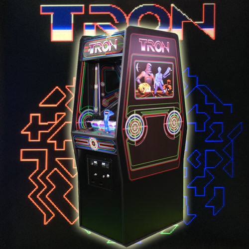

Classic Arcade Tron Game.
Tron è un videogioco arcade pubblicato da Bally Midway nel 1982, ispirato all'omonimo film.
Classic Arcade Pong Game.
Classic Arcade Snake Game.
Tron è un videogioco arcade pubblicato da Bally Midway nel 1982, ispirato all'omonimo film.